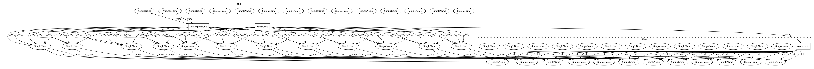

c3a2b85b98dc441f97703c426d5bd75568b0ce10,keras_rcnn/layers/losses/_rcnn.py,RCNNRegressionLoss,compute_regression_loss,#,64
Before Change
indices_r = a[:, :2]
indices_c = a[:, 2:]
indices_0 = keras.backend.concatenate([indices_r, indices_c * 4], 1)
indices_1 = keras.backend.concatenate([indices_r, indices_c * 4 + 1], 1)
indices_2 = keras.backend.concatenate([indices_r, indices_c * 4 + 2], 1)
indices_3 = keras.backend.concatenate([indices_r, indices_c * 4 + 3], 1)
indices = keras.backend.concatenate([indices_0,
indices_1,
indices_2,
indices_3], 0)
updates = keras.backend.ones_like(indices, dtype=keras.backend.floatx())
labels = keras_rcnn.backend.scatter_add_tensor(keras.backend.zeros_like(output, dtype="float32"), indices, updates[:, 0])
inside_mul = inside_weights * keras.backend.abs(output - target) * labels
smooth_l1_sign = keras.backend.cast(keras.backend.less(inside_mul, 1.0 / sigma2), keras.backend.floatx())
smooth_l1_option1 = (inside_mul * inside_mul) * (0.5 * sigma2)
smooth_l1_option2 = inside_mul - (0.5 / sigma2)
smooth_l1_result = (smooth_l1_option1 * smooth_l1_sign)
smooth_l1_result += (smooth_l1_option2 * (1.0 - smooth_l1_sign))
loss = outside_weights * smooth_l1_result
epsilon = 1e-4
b = keras.backend.sum(epsilon + labels)
loss = tensorflow.reduce_sum(loss) / b
return loss
After Change
a = keras.backend.cast(a, "int32")
rr = a[:, :2]
cc = a[:, 2:]
indices = [
keras.backend.concatenate([rr, cc * 4 + 0], 1),
keras.backend.concatenate([rr, cc * 4 + 1], 1),
keras.backend.concatenate([rr, cc * 4 + 2], 1),
keras.backend.concatenate([rr, cc * 4 + 3], 1)
]
indices = keras.backend.concatenate(indices, 0)
updates = keras.backend.ones_like(indices, dtype=keras.backend.floatx())
labels = keras_rcnn.backend.scatter_add_tensor(keras.backend.zeros_like(output, dtype="float32"), indices, updates[:, 0])
inside_mul = inside_weights * keras.backend.abs(output - target) * labels
smooth_l1_sign = keras.backend.cast(keras.backend.less(inside_mul, 1.0 / sigma2), keras.backend.floatx())
smooth_l1_option1 = (inside_mul * inside_mul) * (0.5 * sigma2)
smooth_l1_option2 = inside_mul - (0.5 / sigma2)
smooth_l1_result = (smooth_l1_option1 * smooth_l1_sign)
smooth_l1_result += (smooth_l1_option2 * (1.0 - smooth_l1_sign))
loss = outside_weights * smooth_l1_result
epsilon = 1e-4
b = keras.backend.sum(epsilon + labels)
loss = tensorflow.reduce_sum(loss) / b
return loss
In pattern: SUPERPATTERN
Frequency: 3
Non-data size: 3
Instances
Project Name: broadinstitute/keras-rcnn
Commit Name: c3a2b85b98dc441f97703c426d5bd75568b0ce10
Time: 2017-11-14
Author: allen.goodman@icloud.com
File Name: keras_rcnn/layers/losses/_rcnn.py
Class Name: RCNNRegressionLoss
Method Name: compute_regression_loss